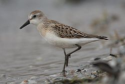
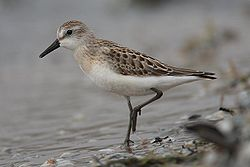

| Semipalmated Sandpiper | |
|---|---|
|  | |
| Conservation status | |
| Binomial name | |
| Calidris pusilla Linnaeus, 1766 |
|
| Synonyms | |
|
Ereunetes pusillus (but see text) |
| Semipalmated Sandpiper | |
|---|---|
|  | |
| Conservation status | |
| Binomial name | |
| Calidris pusilla Linnaeus, 1766 |
|
| Synonyms | |
|
Ereunetes pusillus (but see text) |
The Semipalmated Sandpiper, Calidris pusilla, is a very small shorebird. It is sometimes separated with other "stints" in Erolia but although these apparently form a monophyletic group, the present species' old genus Ereunetes had been proposed before Erolia.
Adults have black legs and a short stout straight dark bill. The body is dark grey-brown on top and white underneath. The head and neck are tinged light grey-brown. This bird can be difficult to distinguish from other similar tiny shorebirds, in particular the Western Sandpiper; these are known collectively as "peeps" or "stints".
Their breeding habitat is the southern tundra in Canada and Alaska near water. They nest on the ground. The male makes several shallow scrapes, the female chooses one and adds grass and other material to line the nest. The female lays 4 eggs; the male assists in incubation. After a few days, the female leaves the young with the male; the young feed themselves.
They are long distance migrants and winter in coastal South America with some going to the southern United States. They migrate in flocks which can number in the hundreds of thousands, particularly in favoured feeding locations such as the Bay of Fundy and Delaware Bay. This species is a rare but regular vagrant to western Europe.
These birds forage on mudflats, picking up food by sight and feel (bill). They mainly eat aquatic insects and crustaceans.
Although very numerous, these birds are highly dependent on a few key stopover habitats during their migration, notably, Shepody Bay, an arm of the Bay of Fundy [1].
During the months of July and August you can go to one of two information centers run by the Nature Conservancy of Canada about the shorebirds in either Johnson's Mills or Mary's point.

{kind=link}